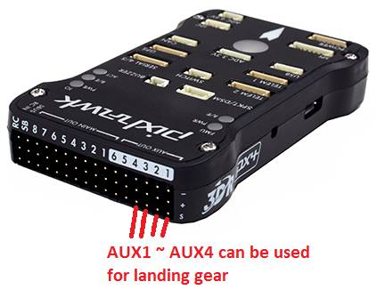

Note
This information is superceded by Landing Gear/ Retractable Camera Mount
Archived: Landing Gear¶
Copter supports retractable Landing Gear activated by a servo mechanism (like these sold by Hobby King). The gear can be manually retracted/deployed with an auxiliary switch. The gear will also automatically deploy during landing.
There is some simple logic controlling the operation beyond simply responding to retract/deploy commands from the controller. If the system is booted up and the landing gear control switch is in the retract position, the landing gear will not retract. This is done to prevent damage to the landing gear or airframe should the switch be accidentally left in the retract position on start-up. In this case, the landing gear will not retract until the switch is first moved to the deploy position, and then back to the retract position.
The landing gear will automatically deploy when the flight mode is changed to Land, during the final landing phase of RTL mode, and when a Land command is executed in AUTO mode.
Note
Support for landing gear was introduced in AC 3.3

Connecting to the Pixhawk¶
Most retractable landing gear will require just a single PWM cable to connected to one of the AUX outputs on the back of the Pixhawk (AUX1 ~ AUX4).
{kind=link}
Note
The signal wire (usually white) should be connected to the lower most “S” pin.
Setup through the Mission Planner¶
Use the Mission Planner’s Full Parameter List (or equivalent) to set the following parameters:
If using AC3.5 (or higher) set
SERVOn_FUNCTION to 29“Landing Gear”, where n is the number for the connected servo (e.g. SERVO9_FUNCTION for AUX1, SERVO10_FUNCTION for AUX2 etc.)If using AC3.4.6 (or lower) set
RCn_FUNCTION to 29“Landing Gear”, where n is the number for the connected servo (e.g.RC9_FUNCTION <RC9_FUNCTION>for AUX1,RC10_FUNCTION <RC10_FUNCTION>for AUX2 etc.)LGR_SERVO_DEPLOY <LGR_SERVO_DEPLOY>— servo PWM value required to deploy the landing gear.LGR_SERVO_RTRACT <LGR_SERVO_RTRACT>— servo PWM value required to retract the landing gear.
{kind=link}
MissionPlanner: Landing Gear Configuration¶
Set an auxiliary switch to “Landing Gear” in order to enable manual control (i.e. set CH7_OPT or CH8_OPT to “29”)
When the switch is in the “low” position the gear will be deployed, “high” will be retracted, “middle” is a neutral position that will not change the gear’s state.
{kind=link}
Mission Planner: Setting Manual Landing Gear Control¶